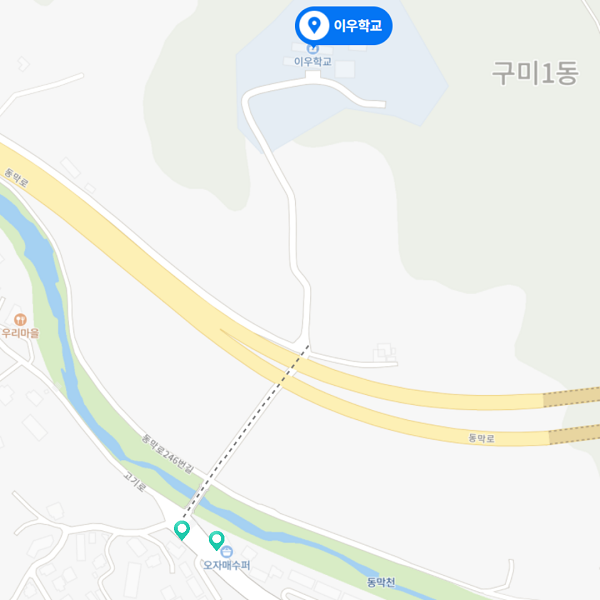

위치 아이콘을 눌러 해당 정류장의 교통정보를 확인해보세요

첫차: AM 05:50 막차: PM 23:20 배차간격 8~13분
첫차: AM 05:00 막차: PM 23:00 배차간격 25분
첫차: AM 06:00 막차: PM 22:00 배차간격: 15분~25분
첫차: AM 04:50분 막차: PM 22:00분 배차간격 20분~30분
첫차: AM 06:00 막차: PM 23:20 배차간격:20분
첫차: AM 05:50 막차: AM 00:10 배차간격: 15~16분
첫차: AM 06:00 막차: PM 23:20 배차간격: 40분